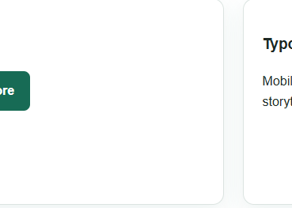
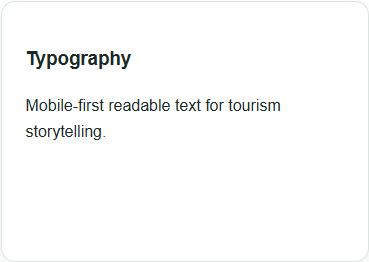
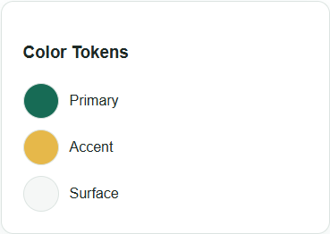
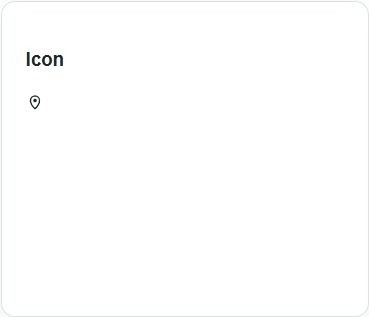
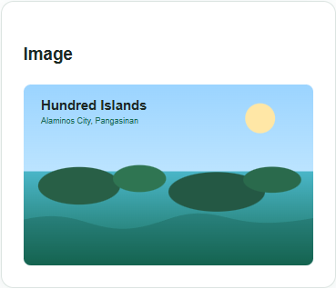
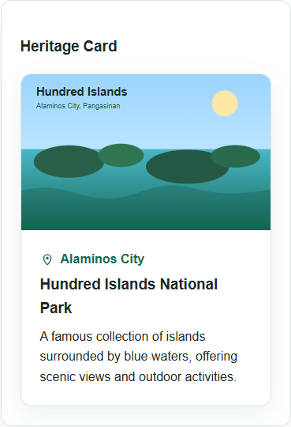
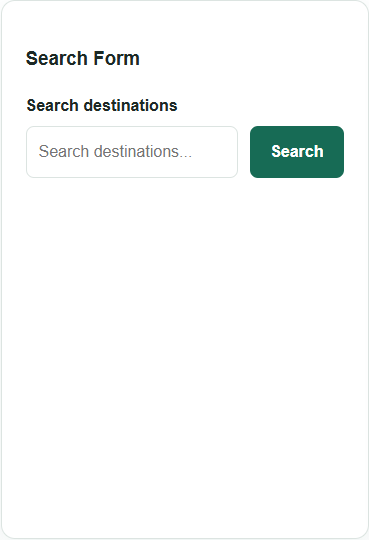
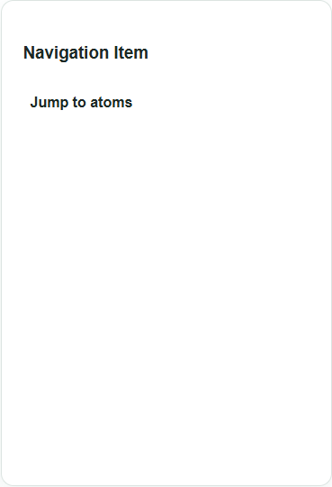
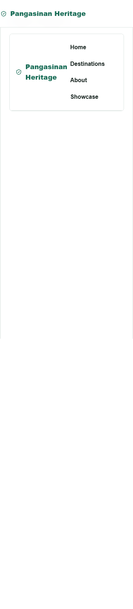
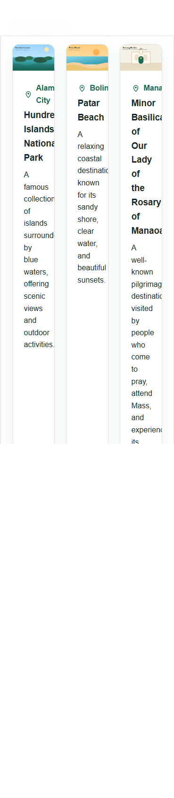

Student: GUNTANG, MORRIS JINN R.
This manual documents the actual component implementation used in the Pangasinan Heritage Digital Showcase. Every preview and code reference in this document comes from the submitted project.
The design system centralizes color, spacing, radius, and shadow tokens in app/assets/css/main.css so the site remains visually consistent.
The site uses a simple Arial / Helvetica stack with semantic headings and body copy wrapped by the BaseTypography atom where reusable text behavior is helpful.
Atoms provide the smallest reusable building blocks, molecules combine atoms into purposeful UI units, and organisms assemble full interface sections such as the header and destination grid.
Atomic Level: Atom
Visual Preview:

Usage Context: Used in the search form as the primary call-to-action and in the component showcase as the reusable button atom.
Responsive Logic: The button keeps a minimum 44px tap height on mobile, scales naturally with its content on tablet and desktop, and preserves a strong contrast state for hover and focus.
Code Reference: components/atoms/BaseButton.vue
<script setup lang="ts">
withDefaults(
defineProps<{
type?: 'button' | 'submit' | 'reset'
}>(),
{
type: 'button'
}
)
</script>
<template>
<button class="base-button" :type="type">
<slot />
</button>
</template>
<style scoped>
.base-button {
min-height: 44px;
padding: 0.75rem 1.25rem;
border: 0;
border-radius: var(--radius-sm);
background: var(--color-primary);
color: #fff;
font-weight: 700;
cursor: pointer;
transition:
background-color 0.2s ease,
transform 0.2s ease;
}
.base-button:hover {
background: var(--color-primary-dark);
}
.base-button:active {
transform: translateY(1px);
}
</style>
Atomic Level: Atom
Visual Preview:

Usage Context: Used for reusable text blocks such as the hero description, about copy, and showcase sample content while preserving semantic tags through the `as` prop.
Responsive Logic: Typography inherits its container width, so the same component flows as a single readable block on mobile and spans wider layouts on tablet and desktop without separate variants.
Code Reference: components/atoms/BaseTypography.vue
<script setup lang="ts">
withDefaults(
defineProps<{
as?: string
tone?: 'default' | 'muted' | 'accent'
}>(),
{
as: 'p',
tone: 'default'
}
)
</script>
<template>
<component :is="as" class="base-typography" :class="`base-typography--${tone}`">
<slot />
</component>
</template>
<style scoped>
.base-typography {
margin-top: 0;
}
.base-typography--muted {
color: var(--color-muted);
}
.base-typography--accent {
color: var(--color-primary);
}
</style>
Atomic Level: Atom
Visual Preview:

Usage Context: Color, spacing, radius, and shadow tokens centralize visual decisions so the homepage, cards, forms, and navigation share one design vocabulary.
Responsive Logic: The token file does not change by breakpoint; instead, mobile, tablet, and desktop layouts consume the same tokens so spacing and color remain consistent across screens.
Code Reference: app/assets/css/main.css
:root {
--color-primary: #176b55;
--color-primary-dark: #0f4f3f;
--color-accent: #e6b84a;
--color-background: #ffffff;
--color-surface: #f5f7f6;
--color-surface-strong: #eaf1ee;
--color-text: #1d2925;
--color-muted: #5d6b66;
--color-border: #dce4e1;
--radius-sm: 0.5rem;
--radius-md: 0.875rem;
--radius-lg: 1.5rem;
--space-1: 0.5rem;
--space-2: 1rem;
--space-3: 1.5rem;
--space-4: 2rem;
--space-5: 3rem;
--space-6: 4rem;
--max-width: 72rem;
--shadow-sm: 0 10px 30px rgba(23, 107, 85, 0.08);
}
*,
*::before,
*::after {
box-sizing: border-box;
}
html {
scroll-behavior: smooth;
}
body {
margin: 0;
font-family: Arial, Helvetica, sans-serif;
color: var(--color-text);
background: var(--color-background);
line-height: 1.6;
}
img {
display: block;
max-width: 100%;
}
button,
input {
font: inherit;
}
a {
color: inherit;
}
code,
pre {
font-family: Consolas, "Courier New", monospace;
}
.container {
width: min(100% - 2rem, var(--max-width));
margin-inline: auto;
}
.section-title {
margin: 0;
font-size: clamp(1.75rem, 3vw, 2.5rem);
}
.eyebrow {
margin: 0 0 0.5rem;
color: var(--color-primary);
font-weight: 800;
letter-spacing: 0.04em;
text-transform: uppercase;
}
.surface-card {
border: 1px solid var(--color-border);
border-radius: var(--radius-md);
background: #fff;
box-shadow: var(--shadow-sm);
}
.sr-only {
position: absolute;
width: 1px;
height: 1px;
padding: 0;
margin: -1px;
overflow: hidden;
clip: rect(0, 0, 0, 0);
white-space: nowrap;
border: 0;
}
:focus-visible {
outline: 3px solid var(--color-accent);
outline-offset: 3px;
}
Atomic Level: Atom
Visual Preview:

Usage Context: Wraps small inline SVG icons in the header brand and card location label so decorative graphics remain reusable and accessibility-aware.
Responsive Logic: The icon keeps a compact fixed square that aligns cleanly with nearby text on mobile and remains visually balanced on larger breakpoints.
Code Reference: components/atoms/BaseIcon.vue
<script setup lang="ts">
withDefaults(
defineProps<{
label?: string
}>(),
{
label: ''
}
)
</script>
<template>
<span
class="base-icon"
:aria-hidden="label ? undefined : 'true'"
:aria-label="label || undefined"
>
<slot />
</span>
</template>
<style scoped>
.base-icon {
display: inline-flex;
align-items: center;
justify-content: center;
inline-size: 1.125rem;
block-size: 1.125rem;
color: currentColor;
flex: 0 0 auto;
}
.base-icon :deep(svg) {
inline-size: 100%;
block-size: 100%;
}
</style>
Atomic Level: Atom
Visual Preview:

Usage Context: Displays destination artwork inside cards and the showcase preview while standardizing lazy loading and object-fit behavior.
Responsive Logic: The image fills its parent container at every breakpoint, relying on parent aspect-ratio containers to adapt card and preview proportions across layouts.
Code Reference: components/atoms/BaseImage.vue
<script setup lang="ts">
withDefaults(
defineProps<{
src: string
alt: string
eager?: boolean
}>(),
{
eager: false
}
)
</script>
<template>
<img
class="base-image"
:src="src"
:alt="alt"
:loading="eager ? 'eager' : 'lazy'"
decoding="async"
/>
</template>
<style scoped>
.base-image {
width: 100%;
height: 100%;
object-fit: cover;
}
</style>
Atomic Level: Molecule
Visual Preview:

Usage Context: Used inside the heritage grid and showcase page to present one destination with artwork, location, title, and short descriptive text.
Responsive Logic: Each card fills the width of its grid column: one column on mobile, two on tablet, and three on desktop. Internal padding and image ratio stay stable while the outer grid changes.
Code Reference: components/molecules/HeritageCard.vue
<script setup lang="ts">
defineProps<{
title: string
location: string
description: string
image: string
imageAlt: string
}>()
</script>
<template>
<article class="heritage-card surface-card">
<div class="heritage-card__image">
<BaseImage :src="image" :alt="imageAlt" />
</div>
<div class="heritage-card__content">
<div class="heritage-card__location">
<BaseIcon>
<svg viewBox="0 0 24 24" fill="none" aria-hidden="true">
<path
d="M12 21s6-5.373 6-11a6 6 0 1 0-12 0c0 5.627 6 11 6 11Z"
stroke="currentColor"
stroke-linecap="round"
stroke-linejoin="round"
stroke-width="1.75"
/>
<circle cx="12" cy="10" r="2.25" fill="currentColor" />
</svg>
</BaseIcon>
<span>{{ location }}</span>
</div>
<h3>{{ title }}</h3>
<BaseTypography>{{ description }}</BaseTypography>
</div>
</article>
</template>
<style scoped>
.heritage-card {
overflow: hidden;
}
.heritage-card__image {
aspect-ratio: 16 / 10;
}
.heritage-card__content {
padding: var(--space-3);
}
.heritage-card__location {
display: flex;
align-items: center;
gap: 0.5rem;
margin: 0 0 0.25rem;
color: var(--color-primary);
font-weight: 700;
}
h3 {
margin: 0 0 0.5rem;
}
.base-typography {
margin-bottom: 0;
}
</style>
Atomic Level: Molecule
Visual Preview:

Usage Context: Used on the homepage to filter destinations by destination title or location using a standard search input bound with `v-model`.
Responsive Logic: The form stacks label, input, and button on narrow screens, then switches to a two-column control row at 40rem and above for tablet and desktop.
Code Reference: components/molecules/SearchForm.vue
<script setup lang="ts">
const model = defineModel<string>({
default: ''
})
</script>
<template>
<form class="search-form" role="search" @submit.prevent>
<label for="heritage-search">Search destinations</label>
<div class="search-form__controls">
<input
id="heritage-search"
v-model="model"
type="search"
placeholder="Search destinations..."
/>
<BaseButton type="submit">Search</BaseButton>
</div>
</form>
</template>
<style scoped>
.search-form {
display: grid;
gap: 0.5rem;
}
.search-form__controls {
display: grid;
gap: 0.75rem;
}
label {
font-weight: 700;
}
input {
width: 100%;
min-height: 44px;
padding: 0.75rem;
border: 1px solid var(--color-border);
border-radius: var(--radius-sm);
}
@media (min-width: 40rem) {
.search-form__controls {
grid-template-columns: 1fr auto;
}
}
</style>
Atomic Level: Molecule
Visual Preview:

Usage Context: Provides a reusable text link pattern for the header navigation and showcase route links.
Responsive Logic: Navigation items remain inline and wrap when space is tight on mobile, while the parent header layout places them in a single row on wider screens.
Code Reference: components/molecules/NavigationItem.vue
<script setup lang="ts">
defineProps<{
href: string
}>()
</script>
<template>
<a class="navigation-item" :href="href">
<slot />
</a>
</template>
<style scoped>
.navigation-item {
display: inline-block;
padding: 0.5rem;
text-decoration: none;
font-weight: 700;
}
.navigation-item:hover {
text-decoration: underline;
}
</style>
Atomic Level: Organism
Visual Preview:

Usage Context: Used at the top of the homepage and showcase page to provide brand identity plus quick navigation to key sections and the component showcase route.
Responsive Logic: The header stacks brand and nav links on small screens, then switches to a horizontal flex layout from 48rem upward. Links can still wrap safely when needed.
Code Reference: components/organisms/HeaderNavigation.vue
<template>
<header class="site-header">
<div class="container site-header__inner">
<a class="brand" href="#top">
<BaseIcon>
<svg viewBox="0 0 24 24" fill="none" aria-hidden="true">
<path
d="M12 3 4 7v5c0 5 3.4 8 8 9 4.6-1 8-4 8-9V7l-8-4Z"
stroke="currentColor"
stroke-linecap="round"
stroke-linejoin="round"
stroke-width="1.75"
/>
<path
d="M9.5 12.5 11 14l4-4"
stroke="currentColor"
stroke-linecap="round"
stroke-linejoin="round"
stroke-width="1.75"
/>
</svg>
</BaseIcon>
<span>Pangasinan Heritage</span>
</a>
<nav aria-label="Main navigation">
<ul class="nav-list">
<li><NavigationItem href="#top">Home</NavigationItem></li>
<li><NavigationItem href="#destinations">Destinations</NavigationItem></li>
<li><NavigationItem href="#about">About</NavigationItem></li>
<li><NavigationItem href="/showcase">Showcase</NavigationItem></li>
</ul>
</nav>
</div>
</header>
</template>
<style scoped>
.site-header {
position: sticky;
top: 0;
z-index: 10;
border-bottom: 1px solid var(--color-border);
background: rgba(255, 255, 255, 0.96);
backdrop-filter: blur(12px);
}
.site-header__inner {
padding-block: 1rem;
}
.brand {
display: inline-flex;
align-items: center;
gap: 0.625rem;
color: var(--color-primary);
font-size: 1.15rem;
font-weight: 800;
text-decoration: none;
}
.nav-list {
display: flex;
flex-wrap: wrap;
gap: 0.25rem;
padding: 0;
margin: 0.5rem 0 0;
list-style: none;
}
@media (min-width: 48rem) {
.site-header__inner {
display: flex;
align-items: center;
justify-content: space-between;
}
.nav-list {
margin-top: 0;
}
}
</style>
Atomic Level: Organism
Visual Preview:

Usage Context: Used on the homepage and showcase page to render the full set of destination cards from the shared destination data module.
Responsive Logic: The grid deliberately follows the assignment rule: one card per row on mobile, two cards per row on tablet, and three cards per row on desktop using CSS media queries.
Code Reference: components/organisms/HeritageGrid.vue
<script setup lang="ts">
import type { Destination } from '~~/data/destinations'
defineProps<{
destinations: Destination[]
}>()
</script>
<template>
<div class="heritage-grid">
<HeritageCard
v-for="destination in destinations"
:key="destination.title"
:title="destination.title"
:location="destination.location"
:description="destination.description"
:image="destination.image"
:image-alt="destination.imageAlt"
/>
</div>
</template>
<style scoped>
.heritage-grid {
display: grid;
grid-template-columns: 1fr;
gap: var(--space-3);
}
@media (min-width: 40rem) {
.heritage-grid {
grid-template-columns: repeat(2, 1fr);
}
}
@media (min-width: 64rem) {
.heritage-grid {
grid-template-columns: repeat(3, 1fr);
}
}
</style>
The implementation follows the assignment rule directly: the destination grid displays one card per row on mobile, two on tablet, and three on desktop. The browser verification step confirmed these breakpoints with live measurements.
The final component set satisfies the required Atomic Design structure and is already reused in the homepage and showcase routes, which keeps documentation aligned with the actual submitted code.